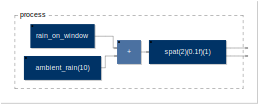

Home
Manual
Introduction
Overview of the Faust Universe
Quick Start
Faust Syntax
Error Messages
Using the Compiler
Compiler Options
faust2[...] Tools
Architecture Files
Embedding the Compiler
Optimizing the Code
Debugging the Code
Deploying on the Web
Remote Compilation
Mathematical Documentation
OSC Support
HTTP Support
MIDI Support
Soundfiles Support
Community
Frequently Asked Questions
Examples
ambisonics
analysis
bela
delayEcho
dynamic
filtering
gameaudio
generator
misc
phasing
physicalModeling
pitchShifting
psychoacoustic
reverb
SAM
smartKeyboard
spat
Download examples
Tutorials
Faust & JUCE
DSP on the Teensy With Faust
DSP on the ESP-32 With Faust
Making a Sine Oscillator From Scratch
RMS and Summation in Faust
Using the box API
Using the signal API
Using Faust in Julia
Using Faust in Cmajor
Using Faust in JSFX
Using Faust in RNBO with codebox~
Advanced debugging with interp-tracer
Workshops
2018-12-01 PAW
2020-03-24 CITI
2020-04-10 Faust 101
2020-04-10 Faust & JUCE
2020-11-21 Faust & VCV Rack
About
Search
gameaudio
bubble
complex_rain
door
fire
insects
rain
thunder
wind
windchimes
gameaudio
bubble
complex_rain

door
fire
insects
rain
thunder
wind
windchimes
Search
×
Close
From here you can search these documents. Enter your search terms below.
Keyboard Shortcuts
×
Close
Keys
Action
?
Open this help
n
Next page
p
Previous page
s
Search